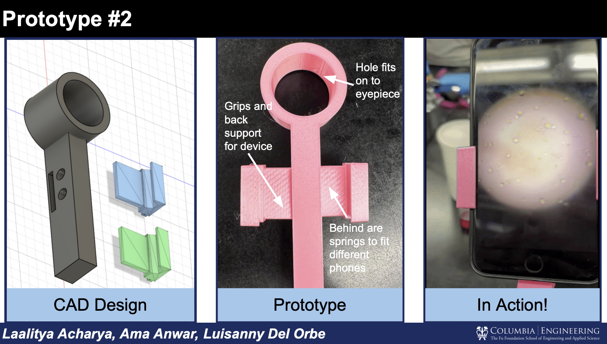

← Back to projects
PROJECT / COMPUTATIONAL BIOMEDICAL IMAGING
Thrombus Composition and Machine Learning
Exploring how cellular composition relates to vessel occlusion in electron microscopy volumes.

Overview
This analysis examines platelet and red blood cell composition in FeCl₃-induced thrombus volumes and its relationship to occlusion.
Methods
Prepared per-slice composition features and compared regression approaches including ridge regression, support vector regression, decision trees, and random forests. Evaluated models with volume-aware splits.
Outcomes
This project provides a framework for comparing predictive features and model behavior. Add validated performance metrics, figures, and conclusions here.